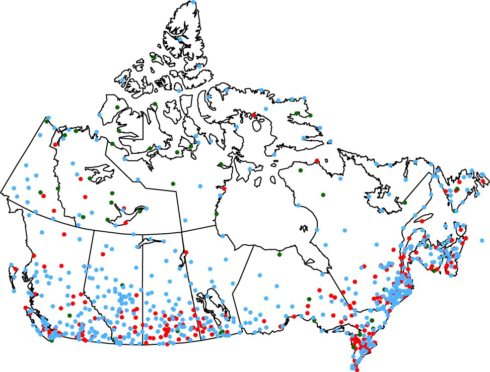

Adjusted and Homogenized Canadian Climate Data (AHCCD)
Summary Description
The Adjusted and Homogenized Canadian Climate Data (AHCCD) dataset is a collection of quality-controlled and homogenized historical climate data from Environment and Climate Change Canada (ECCC). It provides long-term station-based observations for temperature and precipitation across Canada. The dataset corrects for non-climatic changes (e.g., station relocations, instrument changes) to ensure consistency and reliability in climate trend analysis.
ToDo: Add recent references

Dataset Characteristics
- Current version: The dataset us updated annually with the most recent data.
- Time period: Varies per station and variable, data availability ranging between 1840 and 2019
- Spatial resolution: Point locations across Canada
- Temporal resolution: Annual, seasonal, monthly and daily values
- Coverage: Stations across all Canadian provinces and territories
- Data type: Historical observations from ECCC climate stations, adjusted and homogenized using statistical methods
- Web reference: Adjusted and Homogenized Canadian Climate Data (AHCCD)
- Technical documentation: Technical documentation: Adjusted and homogenized Canadian climate data (AHCCD)
- Data access: On ClimateData.ca (daily data), Climate data extraction tool (Monthly, seasonal and annual data)
- Reference publications:
Vincent, L.A., M.M. Hartwell, and W. L. Wang, 2020: A Third Generation of Homogenized Temperature for Trend Analysis and Monitoring Changes in Canada’s Climate. Atmosphere-Ocean.,
Mekis, É. and L.A. Vincent, 2011: An overview of the second generation adjusted daily precipitation dataset for trend analysis in Canada. Atmosphere-Ocean, 49(2), 163-177.,
Wan, H., X. L. Wang, V. R. Swail, 2010: Homogenization and trend analysis of Canadian near-surface wind speeds. Journal of Climate, 23, 1209-1225.,
Wan, H., X. L. Wang, V. R. Swail, 2007: A quality assurance system for Canadian hourly pressure data. J. Appl. Meteor. Climatol., 46, 1804-1817.
Key Strengths of AHCCD
- Homogenized Time Series: Adjustments remove artificial shifts due to non-climatic influences, enabling accurate trend analysis.
- Long-Term Coverage: Many stations provide over 100 years of data for studying climate variability and change.
- National Consistency: Standardized methodologies applied across the Canadian network.
- Open Access: Freely available for public, academic, and government use.
- Supports Climate Indicators: Used in the development of Canadian climate change indicators and official climate assessments.
Limitations of AHCCD
- Station Coverage Gaps: Sparse in some northern or remote regions, limiting spatial completeness.
- Limited Variables: Focused mainly on temperature and precipitation; does not include wind, humidity, etc.
- Historical Instrumentation Issues: Despite adjustments, some uncertainties remain from early observational practices.
- Fixed Locations: Station-based data may not represent broader regional conditions in complex terrain.
- Limited temporal coverage: The latest observation data may not have been processed. Daily data availability has not seen a recent update.
Available Variables in AHCCD
For details click on variable group to uncollapse
Example Applications
links to Electricity Sector Applications